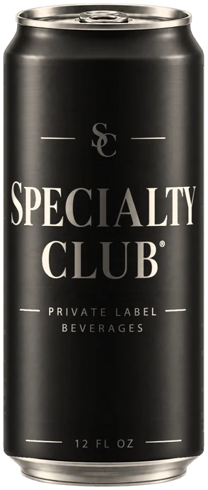

It starts as a formula.
Build something new, or adapt a health-forward base across any of our functional platforms. The flavor system, the actives and the shelf-life target are set before anything is scheduled.
Private label beverage manufacturing
From formulation to full-scale production, under one roof in North Carolina.

Scroll
What we formulate
Flavor development, functional ingredients, formulation, testing and scale-up — built around your beverage. Every run begins in the lab, not on the line: we build the flavor system, adjust for shelf stability, and lock the specification before a single can is filled.
Formula to finished pallet
Commercial beverage manufacturing with the infrastructure to take products from pilot runs to national production.
Every functional platform
Don't see your active? If it can go in a can, we can formulate around it.
Build something new, or adapt a health-forward base across any of our functional platforms. The flavor system, the actives and the shelf-life target are set before anything is scheduled.
Blending and precision filling happen under one roof, from first trial run to full-scale, high-speed production. Each batch is assayed before it fills.
High-speed canning with nitrogen dosing available on every line — specified alongside the liquid, not after it, because the format decides how the drink pours and how long it keeps.
Sustainable, retail-ready packaging. Nutrition panels, allergen statements and label copy are reviewed before plates are cut, not after.
Naming, label and full identity from our in-house studio. You leave with a market-ready brand, not just a beverage — your name on the can, and ours nowhere on it.
Scroll to rotate — or drag the can
Our line · Winston-Salem, NC
Not a design agency that outsources the hard part. A working production floor.
Made at Specialty Club


Start a project
Tell us what you're building. We'll come back with a path from recipe to ready-to-ship.